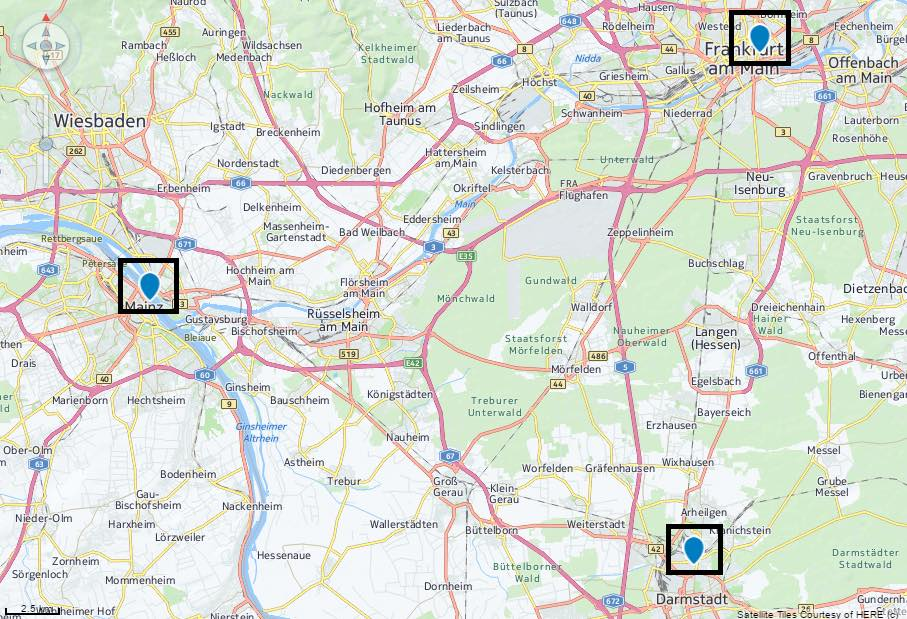

The aim:
To check whether we can zoom to an area on the map containing multiple positions.
To test:
- Click the "Test zoom 100%" button. Check that the GeoMap control stretches the entire width of the container.
Width:
- Click the "Zoom Test" button, and check that the map zooms in to an area containing 3 spots - near Mainz, near Frankfurt, and near Darmstadt.
